01 What the portal replaces
The inbox, as a booking system.
Agency bookings used to arrive by email and WhatsApp. Each one became a thread, and the thread was the record. That fails in ordinary ways: the person who handled it is on leave, two people reply to different copies, a voucher is attached to the wrong message, and nobody can say what was agreed.
Here every request has one reference, one status, and a timeline that cannot be edited after the fact. The agency sees the same status you do, which removes most of the chasing.
Email still goes out for anything that needs attention. Treat the email as a prompt and the portal as the record.
The portal does not hold rates. It carries requests, answers and the documents attached to them. Contract rates stay where they are today.
02 The six roles
What each person sees is decided by their role, not by what they know.
Every member of staff has one role. It decides which screens appear in their sidebar and which buttons appear on a booking. Someone who cannot see a screen has not made a mistake.
| Task | Owner / Admin |
Reservations Manager |
Reservations Agent |
Front Office |
Accounts |
|---|---|---|---|---|---|
| See bookings and reports | ● | ● | ● | ● | ● |
| Confirm or reject a request | ● | ● | ● | — | — |
| Request an amendment | ● | ● | ● | — | — |
| Approve a change or cancellation | ● | ● | ● | — | — |
| Assign a booking to a colleague | ● | ● | ● | — | — |
| Answer an availability enquiry | ● | ● | ● | — | — |
| Set the PMS reference | ● | ● | ● | ● | — |
| Write an internal note | ● | ● | ● | ● | — |
| Read internal notes | ● | ● | ● | ● | ● |
| Add and manage agencies | ● | ● | — | — | — |
| Approve or suspend an agency | ● | ● | — | — | — |
| Revoke one agent's access | ● | ● | — | — | — |
| Rooms and board basis | ● | ● | — | — | — |
| Publish announcements | ● | ● | — | — | — |
| Read the audit log | ● | ● | — | — | — |
| Reopen a closed booking | ● | — | — | — | — |
| Property settings and retention | ● | — | — | — | — |
| Create and manage staff logins | ● | — | — | — | — |
Why Front Office cannot confirm
The front desk's job in this product is the arrivals board and the PMS reference. Confirming a booking commits rooms, and that belongs with reservations. Front Office can still see every booking, write notes, and close the PMS loop.
Why Accounts is read-only
Accounts needs to see what was booked and what was agreed, not to change it. They can read bookings, reports and internal notes, and nothing else.
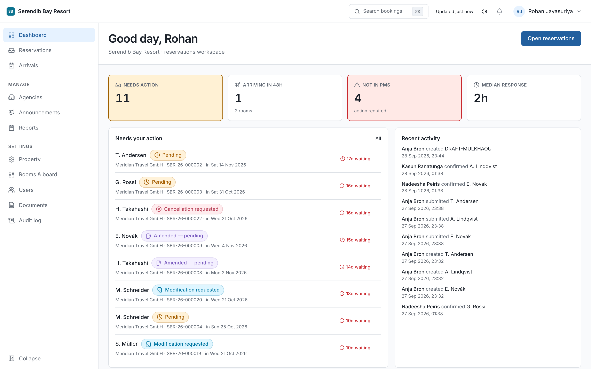
03 The reservations inbox
The screen the desk lives on.
Reservations lists every request from every agency. The number beside it in the sidebar is the count that needs a decision from you, so an empty badge means the desk is clear.
Four statuses are waiting on the hotel: Submitted, Amended, pending, Modification requested and Cancellation requested. Everything else is either settled or with the agency.
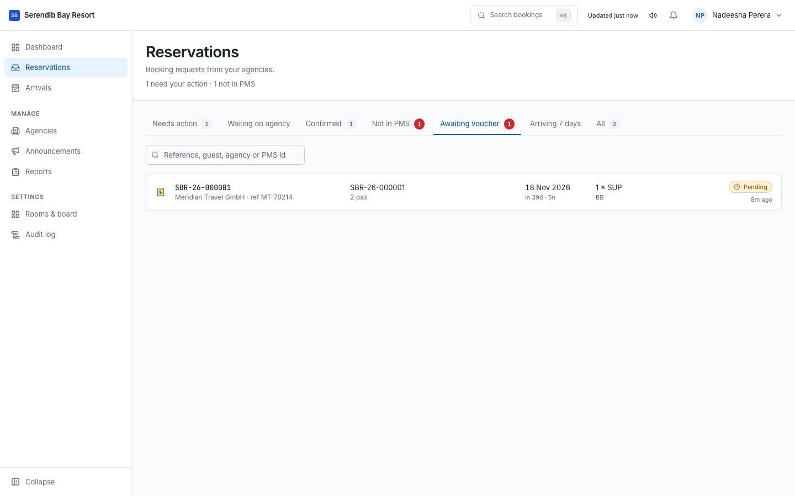
Assigning
Assign a booking to the person handling it. It is how two people avoid answering the same agency differently an hour apart, and it puts a name on the booking when a question comes back weeks later.
Search
⌘K or Ctrl+K searches bookings, agencies and contacts. A surname,
a reference, part of a PMS number. Faster than filtering the list.
04 Answering a request
Three ways to answer, and each one tells the agency something different.
| Action | Status becomes | Use it when |
|---|---|---|
| Confirm | Confirmed | You can give them what they asked for. The rooms are now held. |
| Request amendment | Amendment requested | Nearly right. The voucher says three units and you have two, or a board basis that does not run on those dates. |
| Reject | Rejected | You cannot take it at all. Closed, with your reason on the record. |
Write the reason properly
An amendment request without a reason becomes a phone call, which is the thing the portal exists to remove. We confirmed 2 units, your voucher shows 3 can be fixed by the agency in two minutes. Please check and resubmit cannot.
The reason goes to the agency in the notification email and stays on the booking timeline, so anyone picking it up later can see what was asked and when.
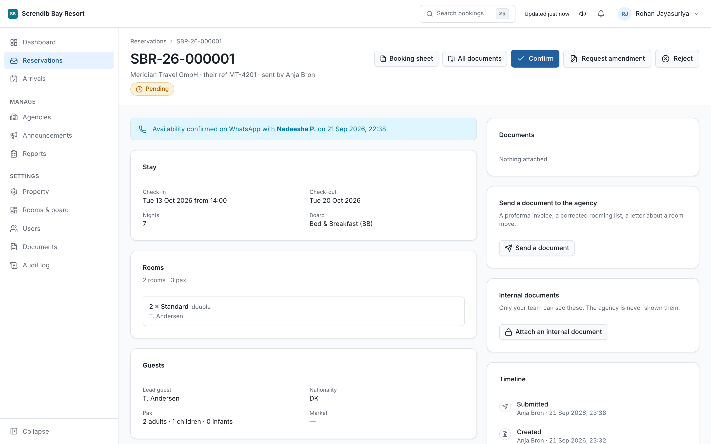
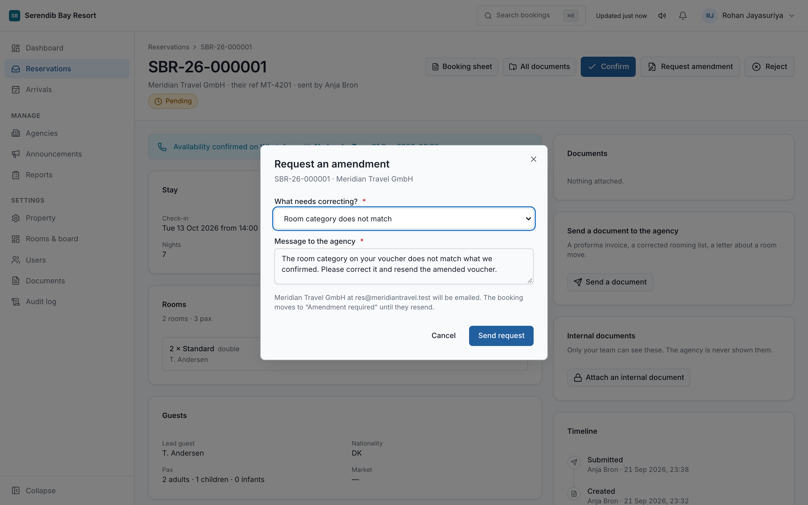
The timeline
Every booking carries a timeline of what happened, who did it, and when. It cannot be edited or deleted by anyone, including an administrator. That is deliberate: a record that can be changed after an argument starts is not a record.
Requests expire. A booking left in Submitted or Amendment requested for longer than the property's setting is closed automatically as Expired. Watch the inbox badge rather than relying on memory.
05 Changes and cancellations
A confirmed booking can only be changed by agreement.
An agency cannot edit a confirmed booking. They raise a request against it, the rooms stay held, and you decide.
| They raise | You can | Result |
|---|---|---|
| Modification requested | Approve or decline | Either way it returns to Confirmed. Declining requires a reason. |
| Cancellation requested | Approve or decline | Approved becomes Cancelled. Declined returns to Confirmed with your reason. |
An agency can withdraw either request before you answer, and the booking goes straight back to confirmed.
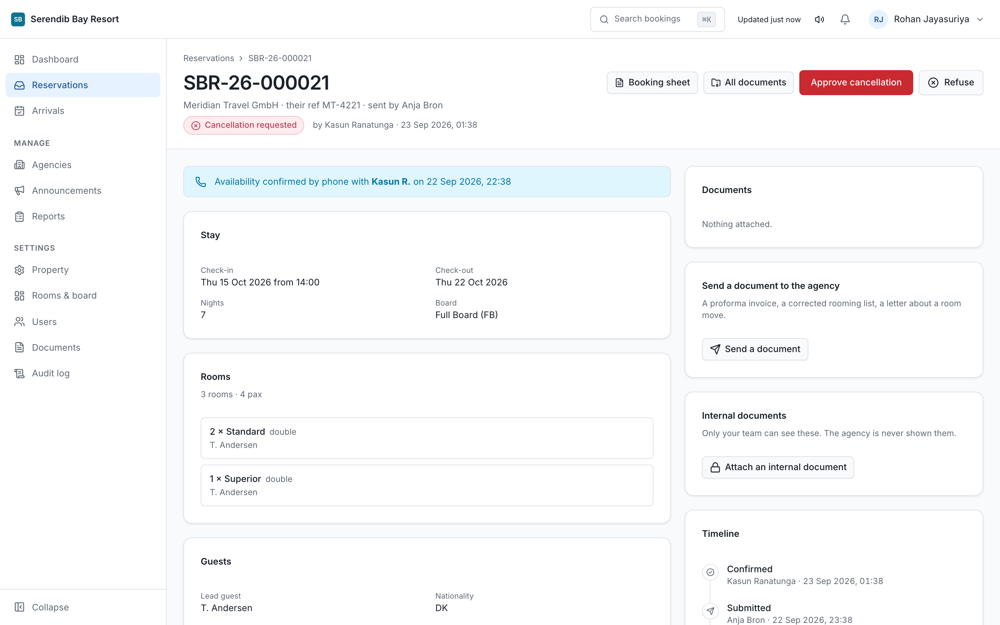
Reopening
An owner or administrator can reopen a booking that was cancelled, rejected or expired. It returns to Submitted and requires a reason, which is recorded. Use it when something was closed in error, not as a general undo.
06 Closing the PMS loop
The step that is easiest to skip and most expensive to miss.
Confirming a booking in the portal does not put it in the property management system. Someone still enters it, and then records the PMS reference back on the booking.
Until that reference is set, the booking shows as confirmed here and does not exist in the PMS. That is the gap that produces a guest at the desk with a voucher and no reservation.
The dashboard counts confirmed bookings with no PMS reference. Front Office can set it, which is why the front desk is in this product at all.
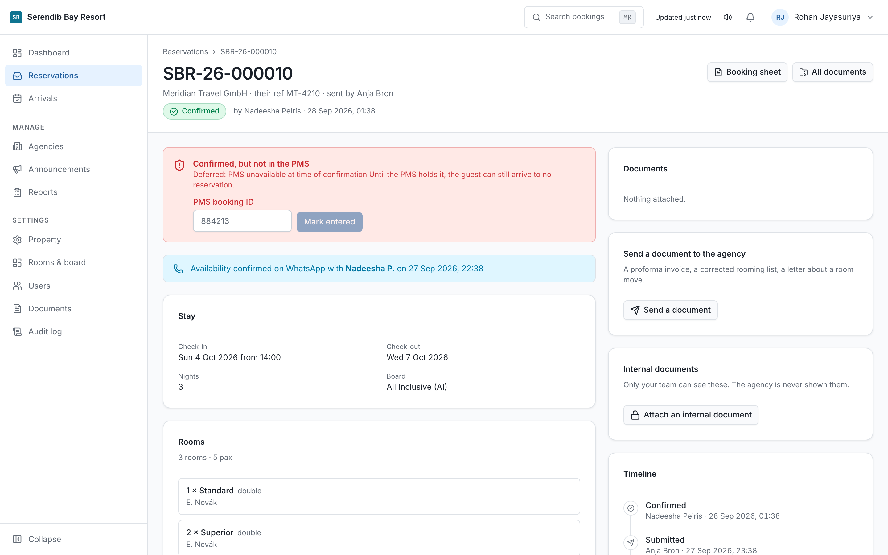
Check this number daily. A confirmed booking with no PMS reference is the single most common cause of a guest arriving to no room.
07 Internal notes
Visible to the hotel. Never to the agency.
A note on a booking is for your own team: the reason a rate was agreed, a complaint from a previous stay, a manager's instruction. The agency cannot see notes and is never told they exist.
Reservations and Front Office can write them. Accounts can read them. Write them as though the guest might one day read them anyway, because a note is a record like any other.
08 The arrivals board
The front desk's screen.
Arrivals shows who is due in, from which agency, on what board basis, and whether the PMS reference is set. It is the morning check before the desk opens.
The portal also emails an arrival reminder to the property each morning, so the list arrives without anyone opening a screen.
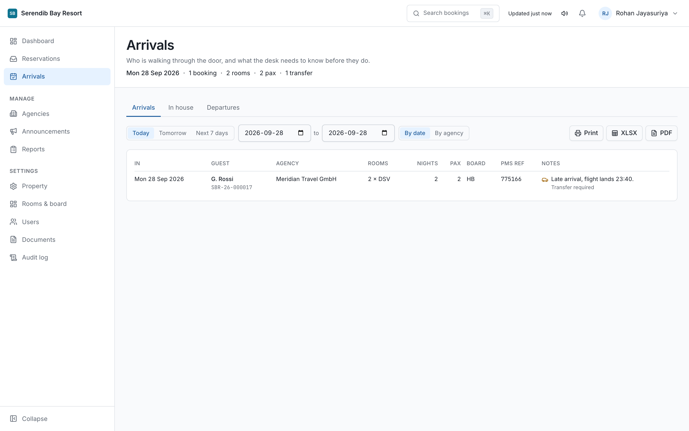
09 Availability enquiries
A question before there is a booking. Off unless you turn it on.
When enabled in property settings, agencies can ask whether something is possible before they promise it to a client. Reservations answers in the portal.
Only the reservations roles can answer, and that is deliberate: saying yes, three doubles, held until tomorrow at six commits inventory before any booking exists. It is the same kind of commitment as confirming, so it sits with the same people.
10 Adding an agency
You create the relationship. They set their own password.
From Agencies, add the agency with one contact email for the company. They receive an email from your hotel's name inviting them to set a password.
You never see or set an agency's password. If they lose it, they use Forgot password. A hotel holding an agency's password would be holding it at every other hotel that agency works with, which is why the portal does not allow it.
An agency that already exists
If the agency already works with another hotel on the portal, adding them sends an invitation rather than creating a new account. They accept with the login they already have, and their company details carry across.
You are not told which other hotels they work with, and they are not told that you looked.
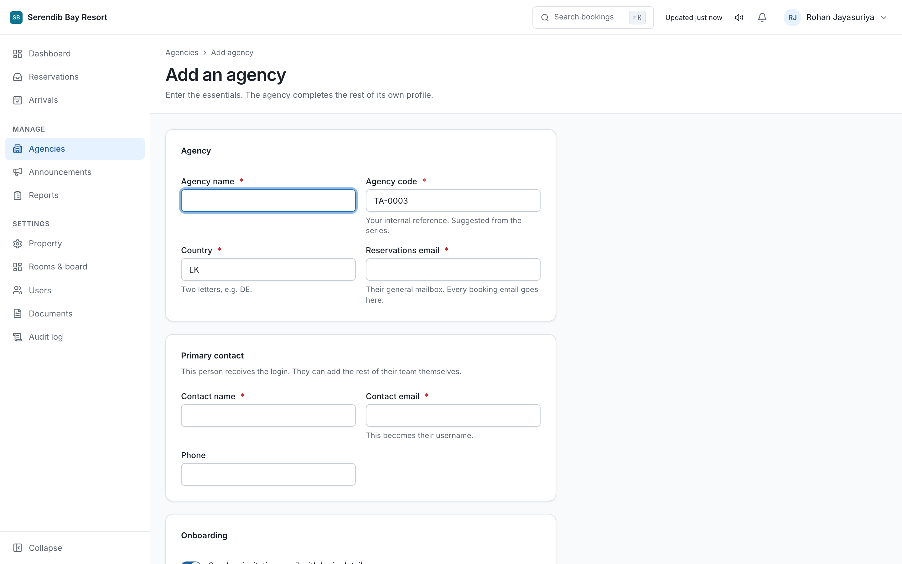
11 Approving and suspending
Six states, and only one of them can book.
| Status | What it means | Can they book? |
|---|---|---|
| Invited | Asked to work with you, not yet accepted. | No |
| Profile incomplete | Accepted, but their company details are unfinished. | No |
| Pending approval | Their profile is complete and waiting on you. | No |
| Active | Approved and trading. | Yes |
| Suspended | Stopped by you, or by them. | No |
| Archived | Closed relationship, kept for the record. | No |
Approving
Check the company details and documents, then approve. Approving says you are willing to trade with them. It does not vouch for them to anyone else.
Suspending
Suspending stops the agency booking with your hotel only. If they work with three hotels on the portal, the other two are unaffected and are not told. Each relationship stands on its own.
Revoking one agent
You can also revoke a single person's access to your property without touching the agency. Use it when one individual is the problem. It cannot change their role, cannot close their account, and cannot affect their access to any other hotel.
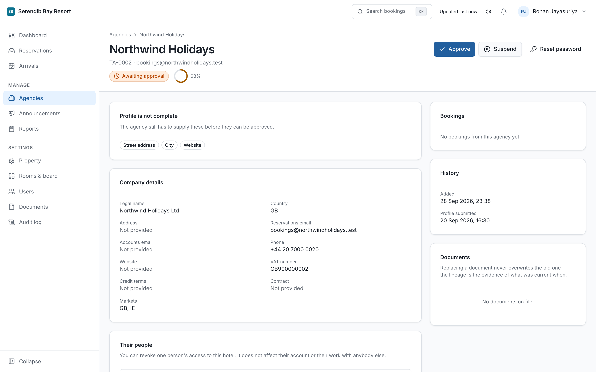
12 Rooms and board basis
What agencies can choose from.
Rooms & board holds your room categories and board bases. These are the options that appear in the agency's booking wizard, so the names here are the names they will quote.
Use the names your contracts use. If an agency's voucher says Deluxe Sea View and your portal says Superior Ocean, every booking needs an amendment.
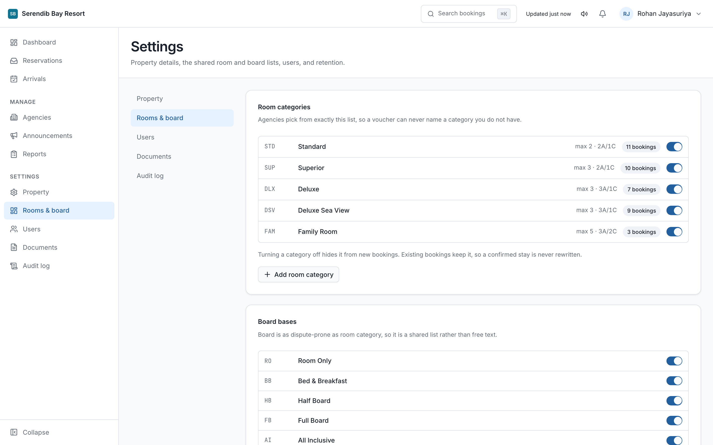
13 Announcements
One message, every agency, at the same moment.
An announcement reaches every active agency at once: a stop-sale, a closure, a change to check-in. It appears under Notices in their portal and is emailed.
You can schedule one for a future date and time. A notice scheduled for nine in the morning goes out close to nine, not whenever somebody remembers.
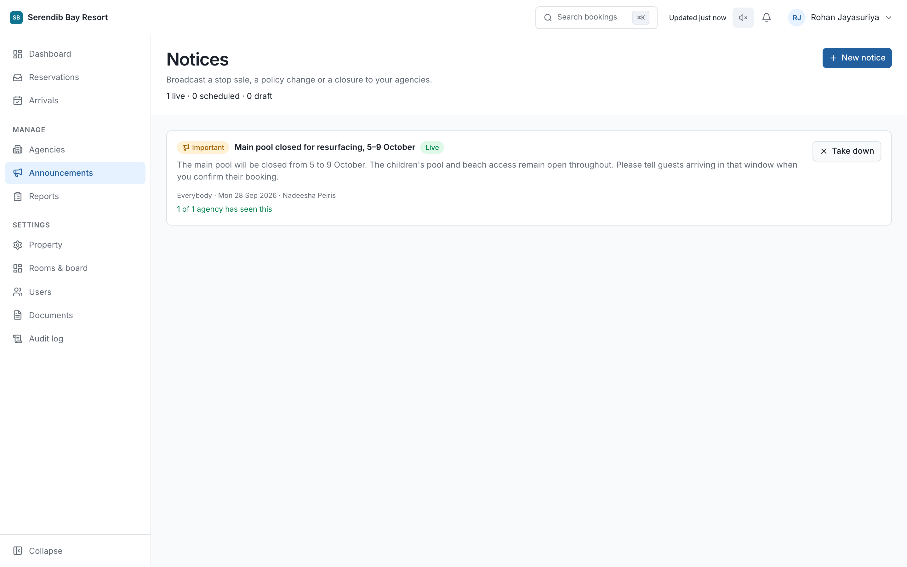
14 Documents and expiry
Licences and certificates, with dates that are watched.
Agencies upload their trade licence, insurance and similar under their own profile. You see them on the agency's page, and the portal warns before one lapses rather than after.
Under Documents in settings you set how long attached files are kept. Vouchers carry guest names, so keeping them forever is a liability rather than an asset. The purge runs automatically once configured, in your property's own timezone.
Legal hold marks a file as exempt from the purge. Use it when a booking is in dispute. It survives the retention setting being changed.
15 Your own staff
Owners and administrators only.
Under Users you create a login for each member of staff and give them a role from the table in section 02. They set their own password from the email they receive.
One login each, never a shared desk account. Every confirmation, rejection and note records who did it, and a shared login turns that record into guesswork at exactly the moment it matters.
When someone leaves, deactivate them the same day.
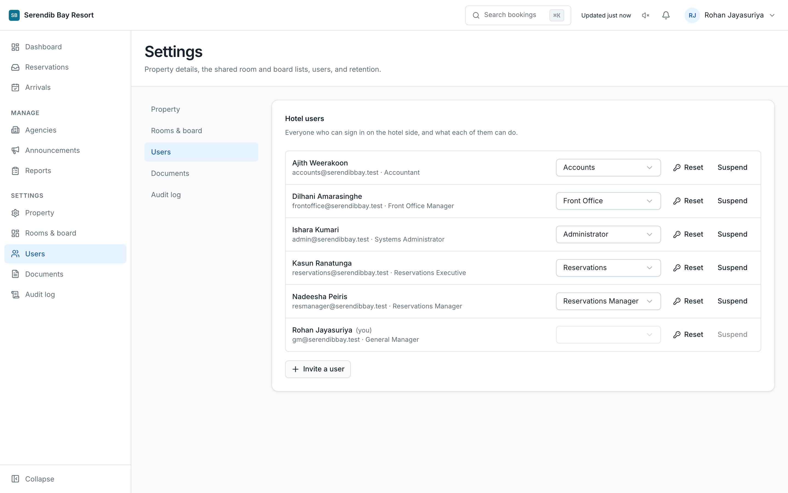
16 Reports
Who is sending you business, and what happened to it.
Reports covers bookings by agency, by status and over time. Every hotel role can read them, including Accounts.
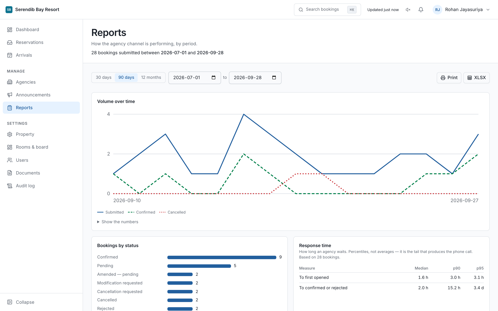
17 Property settings
Owners and administrators only.
Property holds the hotel's name, timezone, booking reference prefix, logo, and the addresses that reservations and front office email goes to. It is also where availability enquiries are switched on, and where the automatic expiry period is set.
The timezone matters more than it looks. The daily digest, the arrival reminders and the document purge all work from the property's local clock, not from the server's.
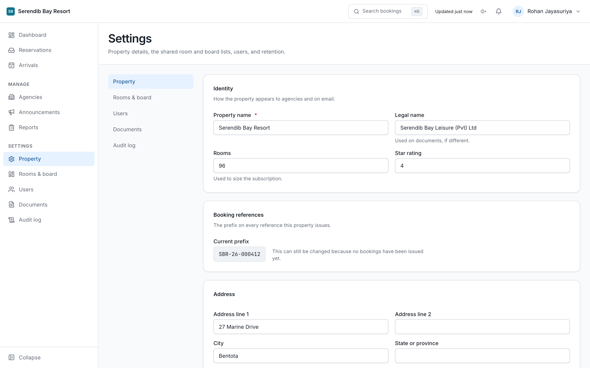
18 The audit log
Who did what, and when.
Audit log records actions across the property: confirmations, rejections, agency approvals, settings changes, logins. Owners, administrators and reservations managers can read it.
Entries cannot be edited or deleted by anyone. If a question arises about what was agreed and when, this is the answer.
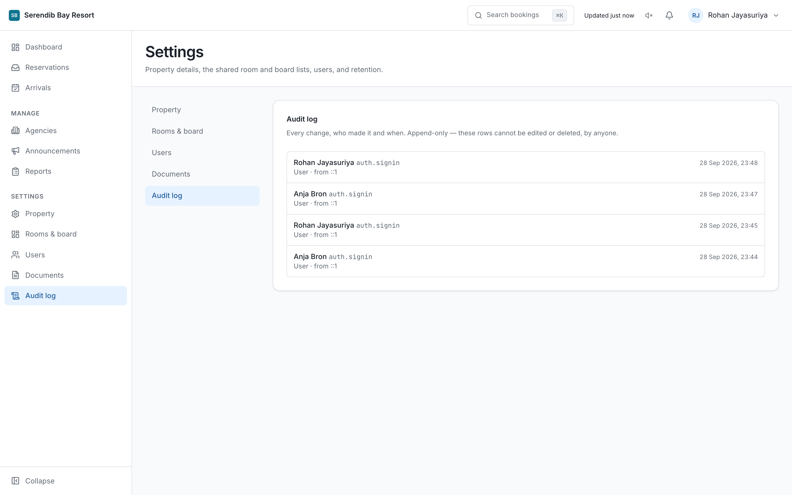
19 When something looks wrong
A screen is missing from the sidebar
The role does not hold it. Check section 02. An owner or administrator can change a role under Users.
An agency says they cannot book
Open their page and read the status. The usual answers are Profile incomplete, Pending approval, or Suspended. The status says which.
An agency says they never received an email
Check the booking timeline, which records what was sent. A bounced address stops receiving until it is corrected, so confirm the address on their profile is the one they actually read.
A guest has a voucher and no reservation
Search the reference. If the booking is confirmed in the portal with no PMS reference, it was never entered into the PMS. See section 06.
Someone confirmed the wrong thing
Nothing on the timeline can be erased. An owner or administrator can reopen the booking with a reason, and both the mistake and the correction stay on the record.